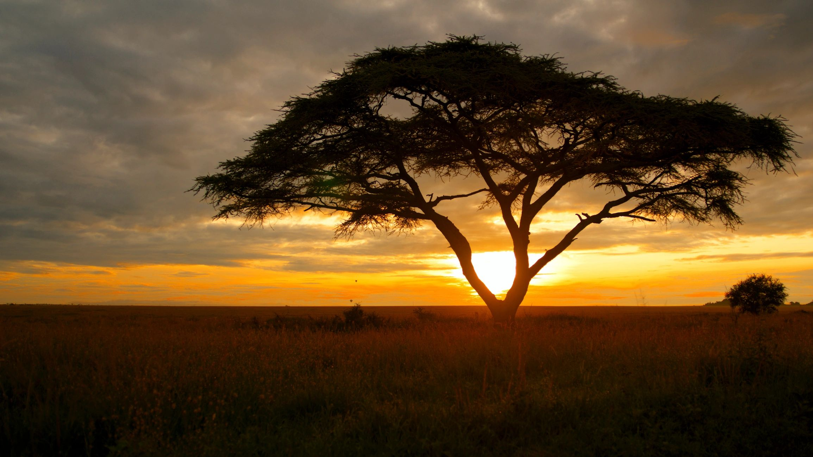

A new generation of African travel
Three brothers. One vision. A journey with purpose.
Three brothers. One vision. A journey with purpose.
Asili Trails Africa began with three brothers who wanted to build something of their own while sharing the Africa they know and love with the rest of the world.
Growing up surrounded by the landscapes, wildlife, cultures and communities of Africa, we saw tourism as more than an industry. We saw it as a way to connect people from different parts of the world while creating something positive for the communities that make these destinations special.
Our journey started in Tanzania, known for extraordinary wildlife, Mount Kilimanjaro, rich cultures and the beaches of Zanzibar. But our vision goes beyond one destination.
A great journey should feel effortless from beginning to end, so we take care of the details that make travelling complicated.
From the moment you arrive, our team can arrange your airport pickup, accommodation, transportation, activities, safari experiences and onward or return flights.
You focus on experiencing Africa. We take care of the journey.
Africa is not one experience, and neither should your journey be. Choose one, or combine them all.

From the plains of the Serengeti to the Ngorongoro Crater, see Africa's wildlife in its natural environment.

Challenge yourself on Mount Kilimanjaro or explore the mountains and landscapes that make Tanzania unique.

Step away from the ordinary with wild camping, outdoor dining and nights beneath the African sky.

Meet people, experience local traditions, discover new flavours and connect with the communities that make Africa what it is.

After the adventure, slow down on the beaches of Zanzibar and see another side of Africa.
A family-founded company built by three brothers, so personal relationships, trust and genuine hospitality come first.
No two travellers are the same. We learn what you want and build the experience around you.
More than the famous sights: the landscapes, cultures, people and moments that make Africa feel alive.
From airport pickup to your journey home, we make the whole experience simple and comfortable.
Travel can create value beyond the traveller, so every journey is designed with a commitment to giving something back.
You explore.
You experience.
You give back.
Travelling is not only about what you take away from Africa. It is also about what you leave behind.
A portion of every eligible journey with Asili Trails Africa will go to community-focused initiatives, with a particular focus on helping children access education and essential needs.
We aim to support projects such as educational materials, school needs, basic necessities and other opportunities for children and communities.
The best journey is one that leaves a positive trail.
We want to build more than a successful travel company. We want to build an African travel brand for a new generation: young, ambitious, connected, responsible and proud of where we come from.
We started in Tanzania, but our dream does not end there. From Tanzania to the wider continent, we hope to connect travellers with extraordinary destinations while creating experiences that benefit the people who visit and the communities they meet.
We promise to approach every journey with care, honesty and attention to detail. We will listen to what you want, help you discover what you may not have considered, and create an experience that feels personal rather than ordinary.
Arrive as a traveller. Leave with a story.
Safari, mountains, culture, islands and adventure. Wherever your trail takes you, we're here to help you experience Africa in a way that stays with you.
Plan your journey